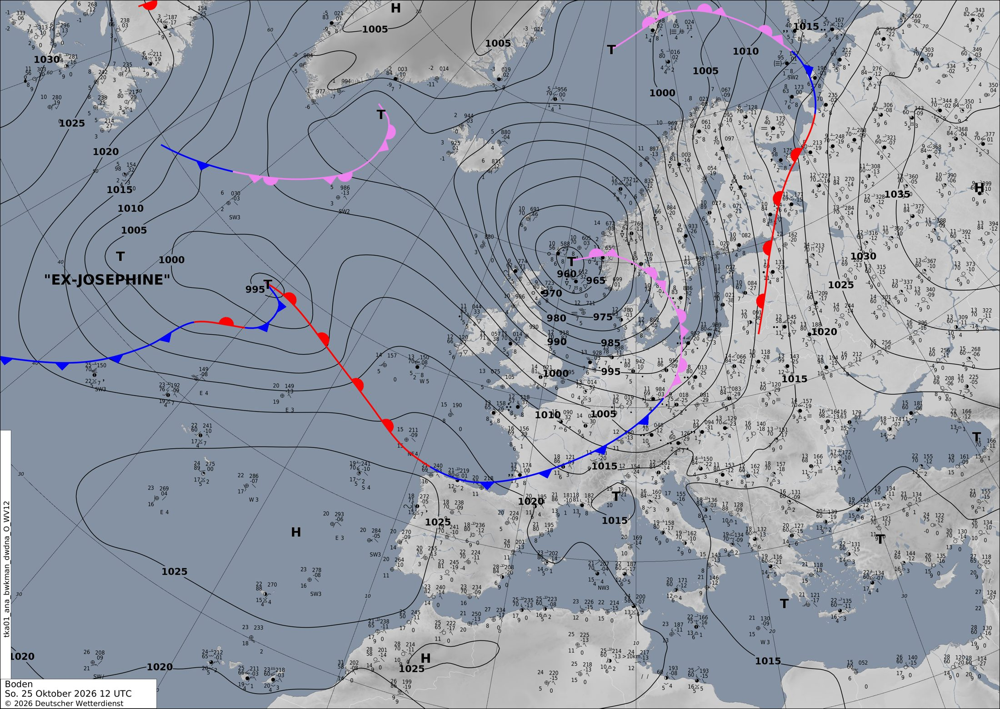

Una borrasca atlántica se refuerza en el norte mientras el anticiclón protege la Península
Una borrasca muy profunda se aleja hacia Noruega y otra crece deprisa en el Atlántico, empujada por un chorro de 300 km/h. La Península queda bajo el anticiclón, con tardes templadas y solo algún frente que roza el norte.
Europa y el Atlántico
Hoy, domingo, el protagonista es una borrasca muy profunda, de unos 950 hPa, que a medianoche estaba al norte de Escocia. Fíjate en lo juntas que están las isobaras a su alrededor: cuanto más apretadas, más fuerte sopla el viento (mira aquí). En el mapa de 500 hPa tiene justo encima un pozo de aire frío. Es una borrasca madura que hoy se va hacia Noruega y se rellena poco a poco. En la carta del DWD de las 12 UTC aparece como una T de 960 hPa sobre el mar del Norte. Su frente frío se extiende hasta el norte de la Península.
Mientras tanto, desde el Atlántico llega el relevo. Junto a los restos de la antigua tormenta Josephine (la «EX-JOSEPHINE» de la carta alemana) se organiza una borrasca nueva. Pasa justo bajo una corriente en chorro muy fuerte, que mañana a medianoche llega a unos 84 m/s (301 km/h) al oeste de Irlanda (mira aquí). Ese río de viento en altura se lleva aire de lo alto de la borrasca, y por eso la presión en el centro baja. Pasa de 978 hPa el lunes a 957 hPa el martes a medianoche, al oeste de Escocia: 21 hPa en un día, casi una ciclogénesis explosiva. Fíjate en la espiral de lluvia que la rodea (mira aquí). El miércoles sigue hacia el mar de Noruega.
Más al sur, el anticiclón subtropical se extiende desde Marruecos sobre la Península, con 1025–1030 hPa. Hace de muro: obliga a las borrascas a pasar por el norte.
En el otro extremo del Mediterráneo hay un tercer actor. Una vaguada que hoy baja por el Adriático acaba separándose de la circulación general. Mañana es ya una DANA al sur de Grecia (mira aquí). El aire frío en altura sobre un mar todavía templado da chubascos fuertes. El modelo prevé hasta 70 mm en 12 horas sobre Grecia mañana y más de 100 mm al sureste del Egeo el miércoles. Las DANA son difíciles de prever, así que esas cifras todavía pueden cambiar.
En península ibérica y Baleares
En la Península y Baleares manda el anticiclón. Hoy, domingo, el frente frío de la borrasca escocesa apenas roza el Cantábrico. Deja como mucho unos 10 mm en 12 horas en el norte, con viento de hasta unos 58 km/h en las zonas más expuestas. En el resto, el cielo está bastante despejado, como se ve en el satélite.
Para ser finales de octubre, hace bueno. La temperatura a 850 hPa, el mejor termómetro de la masa de aire, sube de unos 11 °C de media hoy a unos 14 °C el lunes y el martes. Las máximas de la tarde rondan los 27 °C en las zonas más cálidas. Pero bajo el anticiclón las noches son despejadas y el suelo pierde mucho calor: en algunos valles del interior las mínimas bajan a 2–5 °C.
El martes por la tarde llega la cola del frente frío de la gran borrasca atlántica. Deja hasta unos 10 mm en el noroeste (mira aquí). Detrás entra aire más fresco: en algún punto del norte la temperatura a 850 hPa baja a unos 2 °C, y la media de la región cae a unos 11 °C el miércoles.
Un detalle para seguir: el miércoles a medianoche el modelo calcula en algún punto de la región un CAPE de hasta 1264 J/kg, una medida de la inestabilidad, con lluvias de hasta 6 mm. Podría caer algún chubasco tormentoso aislado (mira aquí). Pero a tres días es un detalle que el modelo puede cambiar.
Lección del día: Frentes: frío, cálido y ocluido
Hoy aprenderás a encontrar un frente frío en tres mapas distintos.
- En la carta del DWD de las 12 UTC, sigue la línea azul con triángulos que baja desde el mar del Norte hasta el Cantábrico. Los triángulos señalan hacia dónde avanza: hacia el sureste.
- Ahora mira el satélite infrarrojo (mira aquí). Un frente se ve como una banda de nubes larga y estrecha, y suele estar curvada alrededor de la borrasca.
- Pasa al martes por la tarde con presión y lluvia (mira aquí). Busca la franja de lluvia alargada que sale de la borrasca hacia el suroeste. Fíjate en que las isobaras hacen un pequeño codo al cruzarla: ese quiebro delata el frente.
- Por último, compara la temperatura a 850 hPa en el norte peninsular antes y después (mira aquí). Detrás de un frente frío, los colores se vuelven más fríos.
Ponte a prueba
3 preguntas sobre el tiempo de hoy. Puedes mirar el mapa antes de contestar.
¿Por qué la borrasca atlántica se hace mucho más profunda entre el lunes y el martes?
En la carta del DWD, ¿qué es la línea azul con triángulos que llega al Cantábrico?
El azul con triángulos es el símbolo del frente frío, y los triángulos señalan hacia dónde avanza. En el satélite se ve su banda de nubes sobre el norte. mira aquí
¿Por qué las grandes borrascas de estos días pasan lejos de la Península?
Las altas presiones, de 1025 a 1030 hPa, cubren la Península y Marruecos y funcionan como un muro: las borrascas lo rodean por el norte. mira aquí Más en la ficha del anticiclón.
La carta oficial
Análisis de superficie del servicio meteorológico alemán (DWD) válido el 25/10/2026 a las 12 UTC, dibujado por meteorólogos a partir de observaciones. Aquí sí hay frentes: azul con triángulos, frío; rojo con semicírculos, cálido; morado, ocluido. Las borrascas son T y los anticiclones H. Cómo leer esta carta.
